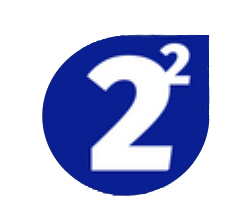

University of Waterloo
Medical Artificial Intelligence Research Assistant
MAY 2022 - PRESENT
WATERLOO, ON
WATERLOO, ON
Incoming Medical Artificial Intelligence Research Assistant supervised under Dr. Bryan Tripp
 WATOLINK
WATOLINK
Biosignal Research Team Lead
OCTOBER 2021 - PRESENT
WATERLOO, ON
WATERLOO, ON
Working with Neural Interfaces and steady state visually evoked potential brain computer interface technology

Math2²Everyone
Founder
SEPTEMBER 2018 - PRESENT
WATERLOO, ON
WATERLOO, ON
A self-started company with the intent to remove barriers associated with learning, and providing necessary support in various levels of mathematics